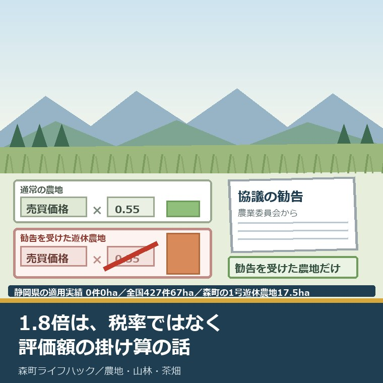
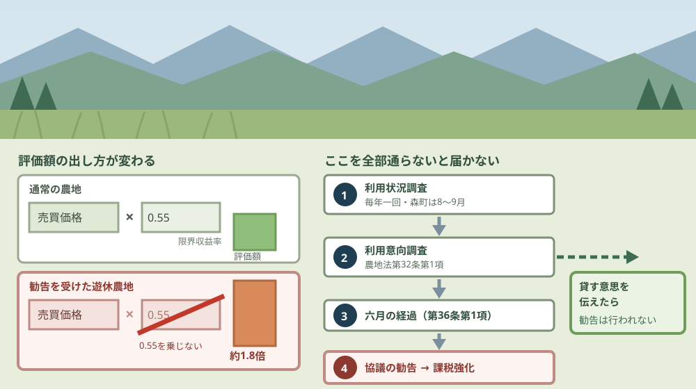
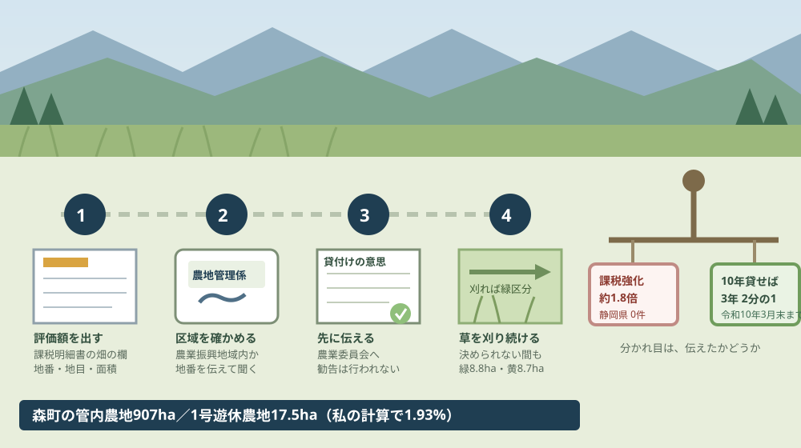

遊休農地の固定資産税が1.8倍になる仕組みと森町の実際

この記事の要点
Q. 相続した畑を何年も使っていません。固定資産税が1.8倍になると聞きましたが、本当ですか。
A. 仕組みはありますが、放置しただけでは対象になりません。対象は農業委員会から農地中間管理機構との協議を勧告された農業振興地域内の遊休農地だけです。令和7年1月1日時点の適用実績は全国427件、静岡県は0件です。貸す意思を伝えれば勧告は行われません。
静岡県周智郡森町（遠州森町）に、親から引き継いだ畑がある。何年も作っていないが、遠方に住んでいて手が回らない。この記事は、その状態を気にかけながら動けずにいる方に向けて書いています。
「使っていない農地は固定資産税が1.8倍になる」という話を、私も相談の場で何度か聞かれました。結論から言うと、仕組みは実在します。ただし、対象はかなり絞られています。
農林水産省の資料は、こう書いています。「通常の農地の固定資産税の評価額は、売買価格×0.55（限界収益率）となっているところ、遊休農地については、0.55を乗じないこととする（結果的に1.8倍になる）」。
掛け算をやめる、という操作です。税率が上がるのではなく、評価額の出し方が変わります。
今日は2026年8月27日。仕組みの中身、対象になる条件、静岡県と森町での実際の数字、そして今日できる一歩を並べます。
公式情報から確定できること
2026年8月27日時点で、農林水産省の資料、藤沢市の説明、農地法の条文、森町農業委員会の公表資料から確認できたことを並べます。制度の名前は遊休農地に係る課税の強化と、農地中間管理機構への貸付けに係る課税の軽減です。出典は記事の末尾に載せています。
一つ目。1.8倍は、0.55を乗じないことによる結果です。農林水産省「遊休農地の課税の強化」は「売買価格×0.55（限界収益率）となっているところ、遊休農地については、0.55を乗じないこととする（結果的に1.8倍になる）」と記しています。
二つ目。資料の用語は「限界収益率」です。「限界収益修正率」という表記は、確認した一次資料のいずれにもありませんでした。
三つ目。実施は平成29年度からです。同じ資料は「平成29年度から実施。具体的には、毎年1月1日が固定資産税の賦課期日となっているので、初年度については、平成29年1月1日時点で協議勧告が行われている場合に課税強化が行われることとなる」と記しています。
四つ目。対象は勧告を受けた農地に限られます。同じ資料は「農地法に基づき、農業委員会が、農地所有者に対し、農地中間管理機構と協議すべきことを勧告した農業振興地域内の遊休農地が対象となる」としています。
五つ目。勧告される場面も限定されています。同じ資料は「この協議勧告が行われるのは、機構への貸付けの意思を表明せず、自ら耕作の再開も行わないなど、遊休農地を放置している場合に限定される」と記しています。
六つ目。貸す意思を伝えれば勧告は行われません。同じ資料の注記は「協議勧告が行われる前に実施される利用意向調査において、所有者が機構への貸付けの意思を表明した場合には、機構側の事情で貸付けが行われていなくても、勧告が行われることはない」としています。
七つ目。森になっていれば対象外です。同じ注記は「既に森林の様相を呈しているなど、農地として再生不可能であるとして、農業委員会が非農地と判断した場合にも、勧告が行われることはない」としています。
八つ目。勧告は撤回されることがあります。同じ資料によれば、利用状況調査等で遊休農地が解消された場合、農地中間管理機構が借り入れた場合、裁定により機構が農地中間管理権を取得した場合のいずれかに該当すると勧告が撤回され、翌年度以降の課税強化は解除されます。
九つ目。遊休農地の定義は2種類あります。農地法第32条第1項第1号は「現に耕作の目的に供されておらず、かつ、引き続き耕作の目的に供されないと見込まれる農地」、第2号は「その農業上の利用の程度がその周辺の地域における農地の利用の程度に比し著しく劣つていると認められる農地」と定めています。
十番目。利用状況調査は毎年の法定義務です。農地法第30条第1項は「農業委員会は、農林水産省令で定めるところにより、毎年一回、その区域内にある農地の利用の状況についての調査（以下「利用状況調査」という。）を行わなければならない」と定めています。
十一番目。勧告までには6か月の猶予があります。農地法第36条第1項は、耕作する意思の表明から6月を経過しても利用の増進が図られないとき、権利の設定・移転の意思表明から6月を経過しても行われないとき、利用を行う意思がないとき、利用意向調査から6月を経過しても意思の表明がないときなどに勧告するものとすると定めています。
十二番目。ただし正当の事由があるときは勧告されません。同項ただし書は「当該各号に該当することにつき正当の事由があるときは、この限りでない」と定めています。
十三番目。令和7年1月1日時点の適用実績は全国427件、67ヘクタールです。農林水産省の資料によれば、うち令和6年1月2日以降に新たに対象となったものが63件・12ヘクタールです。
十四番目。静岡県の適用実績は0件、0ヘクタールです。同じ資料の静岡県欄は空欄です。都道府県別では岡山県185件・28ヘクタール、新潟県106件・11ヘクタール、神奈川県12件・2ヘクタールなどとなっています。
十五番目。静岡県の1号遊休農地は2,651ヘクタールです。農林水産省の資料（令和7年3月31日現在）によれば、うち緑区分1,651ヘクタール、黄区分1,000ヘクタール。2号遊休農地は66ヘクタール、再生利用が困難な農地は4,655ヘクタールです。
十六番目。静岡県の1号遊休農地は増え続けています。同じ資料によれば、令和3年度2,374ヘクタール、令和4年度2,407ヘクタール、令和5年度2,605ヘクタール、令和6年度2,651ヘクタールです。
十七番目。区分の意味は資料に定義があります。緑区分は「草刈り等を行うことにより、直ちに耕作することが可能となる農地」、黄区分は「基盤整備事業の実施など農業的利用を図るための条件整備が必要となる農地」です。
十八番目。森町の管内農地面積は907ヘクタールです。森町農業委員会の公表資料（令和8年3月31日現在）によれば、田576ヘクタール、畑331ヘクタールです。
十九番目。森町の1号遊休農地は17.5ヘクタールです。同じ資料によれば、緑区分8.8ヘクタール、黄区分8.7ヘクタールです。
二十番目。令和3年度の調査では緑区分20.0ヘクタール、黄区分15.0ヘクタールでした。同じ資料の記載です。
二十一番目。緑区分の解消目標4.0ヘクタールに対し、実績は0.0ヘクタールでした。同じ資料は達成状況を0.0パーセントと記しています。
二十二番目。黄区分の工程表は「策定していない」と記されています。同じ資料の記載です。前年度に新規発生した緑区分の解消実績も0.0ヘクタールです。
二十三番目。森町の利用状況調査は8月から9月に行われます。同じ資料によれば、結果の取りまとめ時期は3月です。活動強化月間として8月と9月に「利用状況調査を実施し、遊休農地の把握及び解消に向けた活動に努める」と記されています。
二十四番目。令和7年度の利用意向調査は、実施時期の欄が「－」です。同じ資料の記載で、取りまとめ時期も「－」となっています。
二十五番目。森町は課題を資料に明記しています。「耕作者の高齢化及び後継者の不足により遊休農地の解消が困難となる中で、遊休農地となることを未然に防止するため、農業委員等による農地パトロールを徹底する必要がある。一方で、判断基準の統一が困難であり、農地パトロール及び得られたデータの集計等に膨大な時間がかかってしまうという問題がある」。
二十六番目。森町の農地集積率は45.6パーセントです。同じ資料によれば目標60.0パーセントに対する実績で、413.5ヘクタール／907ヘクタール。点検結果は「目標を下回る結果となった。」と記されています。
二十七番目。逆に軽減される仕組みもあります。藤沢市の説明によれば、農業振興地域内の農地について、所有するすべての農地（面積1,000平方メートル未満の自家消費用農地を除く）を農地中間管理機構に10年以上貸し付けた場合、固定資産税が3年間、2分の1に軽減されます。
二十八番目。軽減の適用期限は令和10年3月31日です。同じ説明によれば、貸付けの設定が平成28年4月1日から令和10年3月31日までに行われたものに限られ、令和8年度の税制改正で期間が延長されました。

この図で描きたかったのは、左側が掛け算の有無だけで決まるという点です。税率はどちらも同じで、評価額の出し方が変わります。
右側に段を四つ描いたのには理由があります。「使っていない」から「1.8倍」までの間に、調査と意向確認と6か月の猶予が挟まっています。途中で貸す意思を伝えれば、そこで分岐します。
森町の畑に置き換えると、この数字は何を意味するか
ここからは、公表された数字を森町の面積で割り戻します。分母を書いたうえで、私の計算であることを先に断っておきます。
まず、規模です。森町の1号遊休農地17.5ヘクタールを、管内農地面積907ヘクタールで割ると1.93パーセントになります。100枚の農地のうち2枚、という水準です。
静岡県と比べます。静岡県の1号遊休農地2,651ヘクタールに対し、森町は17.5ヘクタール。県全体の0.66パーセントです。森町の遊休農地は、県全体の1パーセントに満たない面積です。
次に、全国の適用実績を割ります。427件で67ヘクタールなので、1件あたり0.157ヘクタール。およそ1反6畝です。畑1枚から2枚が課税強化を受けている計算になります。
ここで、私がいちばん引っかかった数字を書きます。静岡県の1号遊休農地は2,651ヘクタールあるのに、課税強化の適用実績は0件・0ヘクタールです。
面積は3年で277ヘクタール増えているのに、勧告に至った件は公表上ゼロ。正直に言えば、1.8倍という数字が独り歩きしている一方で、静岡県ではまだ一度も起きていないというのが実態です。
森町の資料を見ると、その手前で止まっていることも読めます。令和7年度の利用意向調査は、実施時期の欄が「－」でした。勧告は利用意向調査の後に来る手続きなので、そこに至っていないということです。
森町が手を抜いているという話ではありません。資料には「農地パトロール及び得られたデータの集計等に膨大な時間がかかってしまう」と、はっきり書かれています。11人の農業委員と6人の推進委員で、907ヘクタールを毎年見て回る作業です。
それでも、私が読み解けていない数字があります。緑区分の解消目標4.0ヘクタールに対して、実績が0.0ヘクタール。達成状況0.0パーセント。目標の立て方が高すぎたのか、動かす手が足りなかったのか、資料からは判断できませんでした。
税額の目安は、自分で出せます。手元の固定資産税の課税明細書にある畑の評価額を1.8倍し、そこに町の税率を掛ければ、増える額の上限が分かります。森町の畑や山に路線価はなく、評価は倍率方式です。仕組みは森町の畑と山を倍率方式で見る記事に整理しました。
良い点：この仕組みの、よくできているところ
遊休農地に係る課税の強化には、評価したい点が4つあります。順に書きます。
一つ目。逃げ道が先に用意されていることです。貸す意思を表明すれば、機構側の事情で貸付けが実現しなくても勧告は行われません。所有者が動いた事実そのものが効きます。
二つ目。再生不可能な土地を切り分けていることです。すでに森の様相を呈している農地は、非農地と判断されれば勧告の対象から外れます。実態と帳簿の乖離を、罰で埋めようとしていません。
三つ目。解除の道が3つ示されていることです。遊休農地の解消、機構による借入れ、裁定による農地中間管理権の取得のいずれかで勧告は撤回され、翌年度から課税強化は解除されます。一度かかったら終わりではありません。
四つ目。飴の側が同時に用意されていることです。10年以上の貸付けで固定資産税が3年間2分の1になる軽減措置があり、適用期限も令和10年3月31日まで延びました。
森町の資料についても、1つ挙げます。達成状況0.0パーセントを、そのまま公表していることです。目標を書き換えて体裁を整えることもできたはずですが、実績0.0ヘクタールと書いてあります。
注文したい点：畑を持っている側から見て足りないところ
ここからは、森町の外に住みながら畑を持っている人の立場で、一事業者としての注文を3つ書きます。批判ではなく、使う側から見た報告です。
一つ目。森町公式サイトに、遊休農地を説明するページがありません。農地の売買・貸借、農地転用、農地の相続、賃借料情報といった項目は並んでいますが、遊休農地、農地パトロール、利用状況調査を主題とするページは見当たりませんでした。
森町の遊休農地の数字は、農業委員会の年次公表PDFの中にしかありません。17.5ヘクタールという数字にたどり着くには、様式番号の付いた表を開く必要があります。持ち主向けの入口が1ページあるだけで、届く範囲は変わるはずです。
二つ目。「1.8倍」の説明が、県内の自治体からは出ていません。今回参照できたまとまった説明は、神奈川県藤沢市のページでした。静岡県内で同じ内容を確かめようとすると、国の資料に直接当たることになります。
三つ目。利用状況調査の結果が、持ち主に届く形になっているか分かりません。森町は8月から9月に調査を行い、取りまとめは3月と公表していますが、対象になった農地の所有者へ通知が届くかどうかは資料から読み取れませんでした。

この図で描きたかったのは、四段目の草刈りが軽い作業ではないという点です。緑区分にとどめるということは、毎年刈り続けるということです。
右端の秤には、罰と支援を並べました。同じ制度の中に、放置への課税強化と、貸した場合の軽減が同居しています。どちらの皿に乗るかは、意思を伝えたかどうかで決まります。
対案・結論：今日、畑の持ち主が確かめられること
森町の外に住んでいても、今日のうちに進められることがあります。順番に4つ書きます。
一つ目。固定資産税の課税明細書を出して、畑の地番、地目、面積、評価額を書き出してください。評価額を1.8倍した額が、課税強化を受けた場合の上限の目安になります。
二つ目。その畑が農業振興地域内かどうかを、森町役場の農地管理係へ地番を伝えて確かめてください。課税強化の対象は農業振興地域内の農地に限られるので、ここで対象範囲がはっきりします。
三つ目。貸してもよいと思っているなら、勧告を待たずに農業委員会へ伝えてください。貸付けの意思を表明した場合、実際に借り手が付かなくても勧告は行われないと国の資料に明記されています。
四つ目。まだ決められないなら、草刈りだけでも続けてください。緑区分は「草刈り等を行うことにより、直ちに耕作することが可能となる農地」です。刈るのをやめた瞬間から、黄区分や再生困難の側へ寄っていきます。夏の刈り方と費用は八月の草を誰にいくらで頼むかの記事に書きました。
ここまでやっても、貸すか売るかを決める必要はありません。今日の成果は「自分の畑が課税強化の対象になりうる範囲にあるかどうかを知った」という一点で十分です。
家族での整理の順番は森町の遊休農地を家族で整理するページ、貸し借りの条件は農地の貸し借りを確かめるページにまとめています。すでに近所へ預けている場合の契約の形は田んぼの貸し借りの契約書を確かめる記事が近いはずです。
家族に残す記録
確かめた内容は、その日のうちに1枚にまとめてください。翌年の課税明細書が届いたとき、そのまま比べられます。
書き出す項目は6つです。①畑の所在（大字・字・地番）②地目と面積 ③評価額 ④農業振興地域内かどうか ⑤直近で草を刈った年月 ⑥農業委員会へ何を伝えたか。
確認できなかったことも同じ紙に残します。「農業振興地域内かどうか、まだ聞けていない」も記録です。次に電話するときの質問文になります。
大石の視点
私は磐田市で小さな不動産業を営みながら、森町の空き家や農地の相談も受けています。ここからは資料の話ではなく、私がどう見ているかを書きます。
体験として書ける場面が手元にないので、意見として書きます。私はこの「1.8倍」を、税の話としてではなく、通知の話として見ています。
制度としては筋が通っています。ただ、相談に来る方の側に立つと、最初に出てくる質問は「それで、いくら増えるのか」ではありません。「私のところに何か届いていましたか」です。
森町は8月から9月に利用状況調査をしています。ちょうど今の時期、誰かが実家の畑を見に来ているかもしれない、ということです。県外に住んでいると、その事実自体が届きません。
静岡県の適用実績がゼロだと知って、安心する方もいると思います。私はそこは逆に見ています。ゼロなのは、制度が使われていないだけで、畑が良い状態にあるという意味ではありません。静岡県の1号遊休農地は3年で277ヘクタール増えています。
不動産の目で言うと、課税強化より先に効いてくるのは維持費と近所付き合いです。草が伸びれば隣の畑に種が飛び、獣の通り道になります。1.8倍の税額より、その年ごとの刈り賃のほうが早く効きます。
だから私は、この制度を「怖がるもの」としては案内していません。意思を伝えれば外れる仕組みなので、伝えるか黙っているかの分岐だと説明しています。
それでも、判断がついていないことがあります。森町の緑区分8.8ヘクタールを、誰がどう刈り続けるのか。制度の存在ではなく担い手が回せるかで見るなら、私はまだ答えを持っていません。
まとめ
この記事で確認した事実を、最後に並べ直します。すべて2026年8月27日時点で公表されている内容です。
- 農林水産省の資料は「売買価格×0.55（限界収益率）となっているところ、遊休農地については、0.55を乗じないこととする（結果的に1.8倍になる）」と記している
- 資料の用語は「限界収益率」。「限界収益修正率」という表記は一次資料に見当たらない
- 実施は平成29年度から。賦課期日は毎年1月1日
- 対象は、農業委員会が農地中間管理機構との協議を勧告した農業振興地域内の遊休農地に限られる
- 貸付けの意思を表明した場合、機構側の事情で貸付けが行われていなくても勧告は行われない
- 非農地と判断された場合も勧告は行われない。勧告後も解消・借入れ・裁定のいずれかで撤回され、翌年度から解除される
- 農地法第30条第1項により利用状況調査は毎年一回。第32条第1項が1号・2号遊休農地を定義し、第36条第1項が6月経過等の場合の勧告を定める
- 令和7年1月1日時点の適用実績は全国427件・67ha（うち新規63件・12ha）、静岡県は0件・0ha
- 静岡県の1号遊休農地は令和6年度2,651ha（緑1,651ha・黄1,000ha）。令和3年度2,374haから増加している
- 森町の管内農地面積は907ha（田576ha・畑331ha）、1号遊休農地は17.5ha（緑8.8ha・黄8.7ha）
- 森町の緑区分の解消目標4.0haに対し実績0.0ha、達成状況0.0パーセント。黄区分の工程表は「策定していない」
- 森町の利用状況調査は8月から9月、取りまとめは3月。令和7年度の利用意向調査は実施時期欄が「－」
- 森町の農地集積率は目標60.0パーセントに対し実績45.6パーセント（413.5ha／907ha）
- 私の計算では、森町の1号遊休農地は管内農地の1.93パーセント、静岡県全体の0.66パーセント。全国の適用実績は1件あたり0.157ha
- 農地中間管理機構への10年以上の貸付けで固定資産税が3年間2分の1になる軽減があり、適用は令和10年3月31日までの設定に限られる
よくある質問
Q1. 畑を何年も使っていないと、自動的に固定資産税が1.8倍になりますか。
A1. 自動ではありません。農林水産省の資料によれば、課税強化の対象は「農業委員会が、農地所有者に対し、農地中間管理機構と協議すべきことを勧告した農業振興地域内の遊休農地」に限られます。勧告は、機構への貸付けの意思を表明せず、自ら耕作の再開も行わないなど、遊休農地を放置している場合に限定されると記されています。使っていないだけでは対象になりません。
Q2. 静岡県では実際にどれくらい適用されていますか。
A2. 農林水産省の資料によれば、令和7年1月1日時点で課税強化の対象となっている遊休農地は全国427件・67ヘクタールで、静岡県は0件・0ヘクタールです。都道府県別では岡山県185件・28ヘクタール、新潟県106件・11ヘクタール、神奈川県12件・2ヘクタールなどとなっています。静岡県の1号遊休農地は令和6年度で2,651ヘクタールありますが、課税強化に至った件数は公表上ゼロです。
Q3. 逆に税が安くなる仕組みはありますか。
A3. あります。藤沢市の説明によれば、農業振興地域内の農地について、所有するすべての農地（面積1,000平方メートル未満の自家消費用農地を除く）を農地中間管理機構に10年以上貸し付けた場合、固定資産税が3年間、2分の1に軽減されます。適用は貸付けの設定が平成28年4月1日から令和10年3月31日までに行われたものに限られます。
最後に一つだけ。ここに書いた件数、面積、期限、条文は、いずれも2026年8月27日時点で公表されている内容です。森町での課税強化の適用実績、森町における利用意向調査の実施状況の詳細、調査結果が所有者へ通知されるかどうか、静岡県内の自治体による1.8倍の説明資料の有無は、公表資料からは確認できていません。固定資産税の個別の税額と評価額は、森町役場の税の担当窓口でご確認ください。
参考にした公式情報
- 森町農業委員会事務の実施状況について／静岡県森町（農業委員会の農地利用の最適化の推進の状況その他の事務の実施状況の公表資料が掲載されていること、担当が農地管理係であることを2026年8月27日に確認）
- 令和7年度 農業委員会の農地利用の最適化の推進の状況その他事務の実施状況の公表／静岡県森町（令和8年3月31日現在として、管内の農地面積が907ha（田576ha・畑331ha）であること、総農家数598・農業経営体数307・基幹的農業従事者数454人（うち女性198人、40代以下63人）・認定農業者68経営体であること、農業委員が定数12・実数11、農地利用最適化推進委員が定数6・実数6であること、1号遊休農地面積が17.5ha（緑区分8.8ha・黄区分8.7ha）であること、令和3年度の利用状況調査における緑区分が20.0ha・黄区分が15.0haであること、緑区分の解消目標面積4.0haに対し実績0.0ha・達成状況0.0%であること、黄区分の解消に向けた工程表の策定状況が「策定していない」であること、前年度新規発生の緑区分遊休農地の解消実績が0.0haであること、農地の利用状況調査の実施時期が「8月〜9月」・取りまとめ時期が「3月」であること、農地の利用意向調査の実施時期・取りまとめ時期がいずれも「－」であること、課題欄に「耕作者の高齢化及び後継者の不足により遊休農地の解消が困難となる中で、遊休農地となることを未然に防止するため、農業委員等による農地パトロールを徹底する必要がある。一方で、判断基準の統一が困難であり、農地パトロール及び得られたデータの集計等に膨大な時間がかかってしまうという問題がある。」と記されていること、農地集積率が目標60.0%に対し実績45.6%（413.5ha／907ha）で点検結果が「目標を下回る結果となった。」であること、違反転用面積が0ha、農地法第3条許可事務が年間26件、農地転用（知事送付）が年間27件であることを2026年8月27日に確認）
- 遊休農地の課税の強化／農林水産省（「課税強化の手法」として「通常の農地の固定資産税の評価額は、売買価格×0.55（限界収益率）となっているところ、遊休農地については、0.55を乗じないこととする（結果的に1.8倍になる）。」と記されていること、「実施時期」として「平成29年度から実施。具体的には、毎年1月1日が固定資産税の賦課期日となっているので、初年度については、平成29年1月1日時点で協議勧告が行われている場合に課税強化が行われることとなる。」と記されていること、「対象となる遊休農地」として「農地法に基づき、農業委員会が、農地所有者に対し、農地中間管理機構と協議すべきことを勧告した農業振興地域内の遊休農地が対象となる。この協議勧告が行われるのは、機構への貸付けの意思を表明せず、自ら耕作の再開も行わないなど、遊休農地を放置している場合に限定される。」と記されていること、注記に「協議勧告が行われる前に実施される利用意向調査において、所有者が機構への貸付けの意思を表明した場合には、機構側の事情で貸付けが行われていなくても、勧告が行われることはない。」「既に森林の様相を呈しているなど、農地として再生不可能であるとして、農業委員会が非農地と判断した場合にも、勧告が行われることはない。」および勧告の撤回による解除の3要件が記されていること、資料中に「限界収益率」とあり「限界収益修正率」の表記がないことを2026年8月27日に確認）
- 遊休農地に係る課税の強化の適用実績（令和7年1月1日時点）／農林水産省（注記に「上記の件数及び面積は、農地法第36条第1項の規定に基づく勧告が行われた遊休農地のうち、令和7年1月1日時点で課税強化の対象となっているもの。」「括弧書きはその内数で、令和6年1月2日以降に勧告が行われ、新たに課税強化の対象となったもの。」と記されていること、全国が427件（うち新規63件）・67ha（うち新規12ha）であること、静岡県の欄が件数・面積とも計上されていないこと、岡山県が185件（15件）・28ha（2ha）、新潟県が106件・11ha、神奈川県が12件（5件）・2ha（1ha）であることを2026年8月27日に確認）
- 遊休農地面積の推移（令和7年3月31日現在）／農林水産省（令和6年度の静岡県の1号遊休農地が2,651ha（緑区分1,651ha・黄区分1,000ha）、再生利用が困難な農地が4,655ha、2号遊休農地が66haであること、全国の1号遊休農地が97,992ha（緑区分62,187ha・黄区分35,806ha）、再生利用が困難な農地が158,674ha、2号遊休農地が7,482haであること、静岡県の1号遊休農地が令和3年度2,374ha・令和4年度2,407ha・令和5年度2,605ha・令和6年度2,651haと推移していること、注記に「1号遊休農地（農地法第32条第1項第1号の農地）：草刈りや抜根等の基盤整備により耕作が可能と見込まれる農地」「緑区分…：草刈り等を行うことにより、直ちに耕作することが可能となる農地」「黄区分…：基盤整備事業の実施など農業的利用を図るための条件整備が必要となる農地」「再生利用が困難な農地…：既に森林の様相を呈しているなど農地として復元することが困難な農地」「2号遊休農地（農地法第32条第1項第2号の農地）：利用の程度が周辺の地域の農地に比べ著しく劣っている農地」と記されていることを2026年8月27日に確認）
- 遊休農地対策について／農林水産省（遊休農地に関する措置の解説と関係資料が掲載されていること、「令和3年度より、農地法に基づく『利用状況調査』と荒廃農地調査が統合されました。」と記されていることを2026年8月27日に確認）
- 遊休農地の固定資産税について／神奈川県藤沢市（更新日が2026年3月25日であること、「遊休農地とは、現に耕作されておらず、今後も耕作される見込みがない、または周辺地域の農地と比較し、利用の程度が著しく劣っている農地のことです。」と記されていること、「その協議勧告を受けた農地に対しては課税が強化され、固定資産税が通常の約1.8倍になります。」と記されていること、「農業振興地域内の農地を遊休農地の状態で放置をした場合、農業委員会は農地の所有者に対して利用意向調査を行います。その調査の結果、農地中間管理機構への貸し付けの意思を表明せず、自作の再開も行わないなどの利用の意思等が示されない場合は、農地中間管理機構と協議するよう勧告を行います。」と記されていること、軽減措置として「農業振興地域内の農地について、農家が所有するすべての農地（面積1,000平方メートル未満の自家消費用農地を除く）を農地中間管理機構に10年以上貸し付けた農地に対しては、固定資産税が3年間、2分の1に軽減されます。」「この軽減措置の適用期限は、貸し付けの設定が平成28年4月1日から令和10年3月31日までの間に行われたものに限ります。」「※令和8年度税制改正により、期間が令和10年3月31日まで延長されました。」と記されていることを2026年8月27日に確認。※静岡県内の自治体で同等のまとまった説明ページを確認できなかったため、制度の説明例として参照した）
- 農地法（昭和二十七年法律第二百二十九号）／e-Gov法令検索（第30条第1項が「農業委員会は、農林水産省令で定めるところにより、毎年一回、その区域内にある農地の利用の状況についての調査（以下「利用状況調査」という。）を行わなければならない。」と定めていること、第32条第1項第1号が「現に耕作の目的に供されておらず、かつ、引き続き耕作の目的に供されないと見込まれる農地」、同項第2号が「その農業上の利用の程度がその周辺の地域における農地の利用の程度に比し著しく劣つていると認められる農地」と定めていること、第36条第1項が農地中間管理機構との協議の勧告について「当該農地の所有者等からその農地を耕作する意思がある旨の表明があつた場合において、その表明があつた日から起算して六月を経過した日においても、その農地の農業上の利用の増進が図られていないとき。」ほか5号を列挙し、ただし書で「当該各号に該当することにつき正当の事由があるときは、この限りでない。」と定めていること、同条第2項が農地中間管理機構への通知を定めていることを2026年8月27日に確認）

最終確認日：2026-08-27 ／ 本記事は公表情報と執筆者の見解を分けて記載しています。森町における課税強化の適用実績、利用意向調査の実施状況の詳細、調査結果が所有者へ通知されるかどうか、静岡県内の自治体による1.8倍の説明資料の有無は、公表資料から確認できていません。面積の割合や1件あたりの面積は執筆者が公表値を割った概算で、個別の農地の扱いを示すものではありません。評価額を1.8倍する計算は上限の目安であり、実際の税額を示すものではありません。制度・数値は変更されることがあります。固定資産税の個別の判断は、森町役場の税の担当窓口と農地管理係へご確認ください。